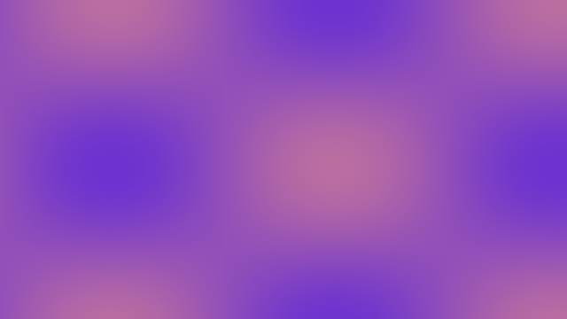
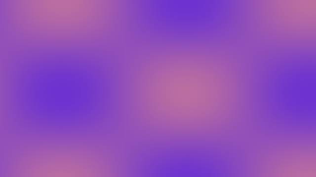

Imagens matriciais
Arte raster original simulando pulsos luminosos capturados de sensores digitais.
Laboratório de mídias
Todo o conteúdo abaixo foi gerado especificamente para a Plataforma VideoIA e representa cada tipo de mídia exigido no projeto.
Arte raster original simulando pulsos luminosos capturados de sensores digitais.
Gráfico vetorial exportado em SVG representando órbitas de dados.
Pulsos senoidais sintetizados a 432 Hz, úteis para marcações sonoras no aplicativo.
Sequência arpejada em tons de Dó maior. Ouça a prévia renderizada e baixe o arquivo MIDI original para reaproveitar.
Baixar MIDI (.mid)Loop MP4 criado com gradientes e partículas em movimento.
GIF animado gerado quadro a quadro simulando um radar IA.